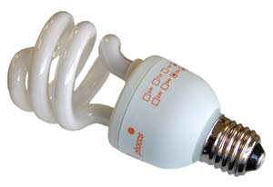
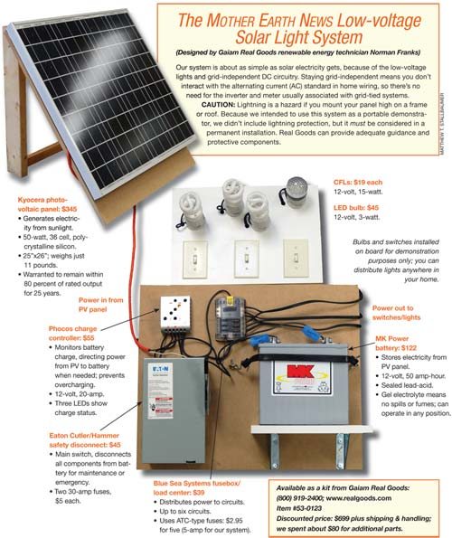

Easy Diy Solar Lighting
Learn renewable energy basics and generate serious solar excitement.
By Charles Higginson
April/May 2007
Many people dream of solar-electric power for their homes, but can’t afford whole-house systems. Here’s an affordable, entry-level system with which you can have fun and get to know the basics of solar power. This setup, built with a small photovoltaic (PV) panel, one battery and low-power direct current (DC) lighting fixtures, can bring solar lighting into your home or remote locations. If you can turn a screwdriver, you can install it yourself.
This project can augment your existing 110-volt lighting circuits. It’s a great introduction to simple solar circuitry, it’s easy to build, and it produces useful light for several hours a day. Not only will it impress your friends and neighbors, but you’ll also enjoy the satisfaction of using clean, renewable energy.
In most home settings, it probably won’t save you money, but in other circumstances this system could save you a bundle. If you want lights in a cabin, garage, barn or garden shed that’s far from installed power lines, this project could be far less expensive than hiring professionals to extend standard power to the building.
Our friends at Gaiam Real Goods, the pioneering retailer of renewable energy products, helped us design the Mother Earth News Low-Voltage Solar Light System (see Image Gallery; visit Real Goods or call 800-919-2400 to order it as a kit, Item #53-0123). The key is its use of energy-efficient loads and low-voltage, DC components and circuitry. That combination keeps total power demand low and simplifies installation. Compact fluorescent light bulbs (CFLs) and light-emitting diodes (LEDs) are available in 12-volt DC forms, and they’re ideal components for a small, off-grid supplemental lighting system. You can easily build a system that will run, say, two or three CFLs for two hours each evening and an LED for five hours - all powered by a small battery charged by a small solar panel.
We spent about $760 on solar components and about $80 on other parts. For ideas on reducing costs, see “Ways to Save on a Solar Light Setup” below.
Once installed, the system has no operating cost and needs little maintenance. The light bulbs are rated to operate for thousands of hours, so they will survive for years when lit for a few hours a day. Both kinds of bulbs cost more than regular incandescent bulbs, but prices are dropping, and they will save you money over the long term. Plus, with this system you won’t pay a penny for electricity. The PV panel in our kit is warranted to produce at least 80 percent of its rated output for 25 years. The battery has the shortest life of all the components; the type we used will typically last three to five years. (For specifications on components, see the diagram in the Image Gallery.)
Easy Solar Power
The generating and storage system has three major parts: a small PV panel, a battery and a charge controller. The PV panel generates electricity whenever sunlight strikes it. The battery stores the electricity, so the lights can be operated at night. Since most cars use 12-volt DC circuitry, it’s tempting to use a car battery, but this would work only for a short time. Car batteries provide large current flows in brief bursts and don’t respond well to being discharged deeply. Here, the battery provides small current flows for long periods and may be discharged fairly completely, so you must use a deep-cycle battery. Several deep-cycle technologies exist; we chose a gel type, which is maintenance-free.
On its way from the PV to the battery, the electricity is routed through a charge controller, which ensures that the battery gets all the power it needs to stay fully charged. It also prevents overcharging.
How big a battery and panel do you need? To answer these questions, work backward from your desired end result: how much light you want for how many hours a day. We settled on three 15-watt CFLs, which could be distributed around the house for general lighting, each one operating for an hour a day (each CFL’s light output roughly equals that of a 60-watt incandescent bulb). We added an LED light bulb and assumed it would operate for five hours a day, pulling the modest total of about 3 watts. LEDs tend to provide very directional light. In the home, this means they’re not the best choice for general ambient lighting, but they’re great for focused task lighting. (If you want more light than this, the tech folks at Real Goods can help you choose the right components.)
Caution: Math Ahead
Here’s a summary of the process of sizing your system. Once you’ve chosen lights and estimated daily usage, calculate watt-hours (Wh). In our case, it goes like this:
(3 CFL bulbs x 15 watts) x 1 hour/day
+
(1 LED bulb x 3 watts) x 5 hours/day
= 60 Wh/day
Having figured daily watt-hours, you can calculate the necessary battery capacity, measured in ampere-hours (Ah). This involves several factors. First, Norman Franks, renewable energy technician at Real Goods, says battery life is determined by depth of discharge and the number of times the battery is discharged. Franks likes to specify a battery that could power the system for three days without being recharged, to cover cloudy days. Second, he says these batteries should not frequently be discharged below 50 percent of capacity. Third, in practice you’ll get about 80 percent of the rated Ah from a battery before its voltage drops below a useful level.
Taking all this into account, Franks recommended a battery for our system rated at 50 Ah. This is a little overcapacity but would allow expansion in the future.
Pick a Photovoltaic (PV) Panel
How much PV will you need to keep the power flowing? We already know we need 60 Wh per day. To account for various inefficiencies in the system, multiply that by two, yielding 120 Wh. In a typical U.S. location, you’ve got five hours a day of good sun with which to generate watts, so dividing 120 Wh by five hours yields 24 W. That’s the minimum generating capacity of a PV panel that will drive this system.
But there are several reasons to upsize from the minimum. Climate is one; in cloudier areas, you’ll need more PV to get the same power. Seasons are another; a panel that’s adequate in optimum conditions may let you down in mid-winter. Economics also enters the picture. Franks says the cost per watt rises sharply with PV panels below about 40 watts. We chose a 50-watt panel, in part because it was in stock and well priced, and in part to get excess capacity to allow for low winter sunlight and perhaps for system expansion.
Having chosen a battery and panel, it’s time to consider the charge controller and safety disconnect. You need to ensure that your total loads don’t exceed the charge controller’s capacity. In our case, a 10-amp charge controller would have ample capacity. However, if you anticipate expansion, you might as well get a bigger charge controller from the start. We settled on a 20-amp model that would accommodate the addition of another similar PV panel and/or extension of our lighting circuits.
Safety disconnects are heavy-duty switches used to isolate the battery from all other components for maintenance or in emergencies. They’re not necessary for operation, but even in a small, low-voltage system like ours, they are highly recommended for safety.
We also picked up a fuse block. It functions like the breaker panel in standard home wiring: The main power source (battery) feeds to positive and negative main terminals, and the individual lighting circuits, protected by fuses, connect to charged secondary terminals.
Solar panels require solidly anchored mounts. Since our panel is so small, we opted for a simple set of feet designed for mounting panels on recreational vehicles. You could easily fabricate an adequate mounting system of your own.
Miscellaneous Parts
Standard, widely available AC components complete the system - wire, cable, switches and sockets. Interior wiring can be speaker wire, its gauge determined by the device’s amperage and the length of run. Measure your planned installation before buying wire. It may be surprising how quickly the distance adds up. (Real Goods can determine the appropriate gauge.) Use stranded rather than solid wire - it’s more flexible.
Our DC bulbs have standard Edison bases and will screw into any common light fixture. They can’t handle dimmers, so get simple switches. Remember to pick up switch boxes, switchplates and junction boxes to mount your socket fixtures.
Let’s Get It Together
The ideal spot for a solar collector of any kind is a shade-free area, facing south, and tilted at an angle from horizontal that is equal to the location’s latitude. A roof often provides an angle close to ideal. You also can build a simple frame to mount the panel on the ground or a south wall.
Also consider the location of the battery, which should be in conditioned space - batteries don’t like extreme temperatures. For efficiency, it’s best to keep the battery as close as possible to the PV, so you may have to balance several factors to design your system. It makes sense as well to keep the charge controller, safety disconnect and fuse block near the battery. A common approach is to mount all components to a sheet of plywood, then attach it to the wall. Make sure the battery’s exposed terminals are not accessible to a casual passerby; you may need to place it in a lidded box. If you build a shelf for the battery, make it stout: Even a small deep-cycle battery like this one weighs almost 40 pounds.
Notes on Assembly
We built this system as a portable demonstration setup, creating some complications you wouldn’t encounter in a permanent domestic installation. Even so, it took one person only about seven hours to put it together, including a trip to the hardware store.
The kit went together easily, using just three screwdrivers, a wire stripper, an adjustable wrench, and a hand drill with two bits. Mount your devices with sufficient room between them for convenient routing. Wiring could hardly be easier - cut wires to length, strip the tips, twist the strands together tightly and screw them into the proper terminals. The wiring diagram provided by Real Goods was crystal-clear.
It’s critical to maintain polarity - all LEDs, and CFLs made for DC, are unidirectional. We used outdoor extension cord to connect the PV panel, and we were lucky that the conductors in the cord had color-coded insulation. The rest of the wire was inexpensive zip-cord type, which had words embossed along one conductor only. We arbitrarily designated that side as positive. Some wire has a ridge molded along one conductor only, and some speaker wire has clear insulation with conductors of different colors. Just make sure you connect positive to positive and negative to negative throughout.
You don’t have to tin the wire ends with solder, but it’s never a bad idea with stranded wire, and it would make some connections easier to secure. We suggest soldering spade lug terminals onto the tips of the two battery cables, to allow more reliable connections and easier disconnects.
It was distinctly odd to run circuits with no provision for grounding, but that’s part of the simplicity of this setup. In general, grounding is optional for PV systems under 50 volts, but it’s a good idea on larger systems and essential anywhere lightning protection is needed.
Two things surprised us the first time we flipped the switches. We expected at least one poor connection, but lo and behold, the lights came right on. And we did not expect them to be as bright as they are - even the LED puts out a nice, bluish gleam. No question about it, this is a genuinely useful solar lighting system.
Ways to Save on a Solar Light Setup
We purchased our components new at retail for about $760, and some were oversized for the immediate need. With a bit of time and energy, you could build a similar system for less money. (Real Goods is offering the kit for $699.)
The PV panel is the most expensive item in the system. There’s a market for used solar panels, which could provide distinct savings. A solar panel that hasn’t been damaged should operate for 25 years without significant degradation, so a panel just a few years old should work for quite a while. Norman Franks of Real Goods says you generally can’t get a warranty on a used panel, but PV is so reliable that the savings are worth the risk.
Batteries also are expensive, and also can be found used, but their life expectancy is considerably less. A used battery would be a way to get started, but anything more than two years old is likely to fail within a couple of years.
Two sources for used equipment are Home Power magazine (under “magazine,” click “marketplace”) and Oasis Montana. The latter also posts worksheets to calculate electrical loads, power requirements and more.
You also could save about $20 by building your own panel mounts from scratch. And you could replace the safety disconnect unit with fuses in a simple in-line fuse block, saving perhaps $25. Don’t be tempted to omit this protective component altogether.
How Solar Power Works
Photovoltaic (PV) panels convert light energy to electrical energy. In a nutshell - keeping in mind there’s a lot more to modern PV than this - here’s what happens: PV takes advantage of the different characteristics of silicon crystals with different impurities. Pure silicon is not electrically active, because its atoms are locked into a solid crystal structure. There are no “spare” electrons running around, and no spots “seeking” electrons. But certain impurities added to silicon create crystal with a slight tendency to lose electrons, and other impurities create crystal with a slight tendency to attract electrons. When the two kinds of silicon are placed close together and exposed to sunlight, photons (particles of light) knock electrons loose on the “losing” side. These electrons travel across the junction to the “attracting” side. That’s an electrical current.
Light-emitting diodes (LEDs) are made of similar materials and take advantage of the same physical principles, but in reverse. Powering LEDs with a PV panel is satisfyingly symmetrical: photons in, electrons out; electrons in, photons out.
Associate Editor Charles Higginson has not had this much fun since he rebuilt the manual transmission of an old Volvo station wagon.
|
 MATTHEW T. STALLBAUMER A 15-watt compact fluorescent produces as much light as a 60-watt conventional bulb while using a quarter of the energy. |
 MATTHEW T. STALLBAUMER The Mother Earth News Low-voltage Solar Light System |
MATTHEW T. STALLBAUMER The safety disconnect holds two 30-amp fuses. |
 MATTHEW T. STALLBAUMER Five-amp fuses protect each circuit. |
MATTHEW T. STALLBAUMER One person using simple tools needed only about seven hours to build the system. |
|